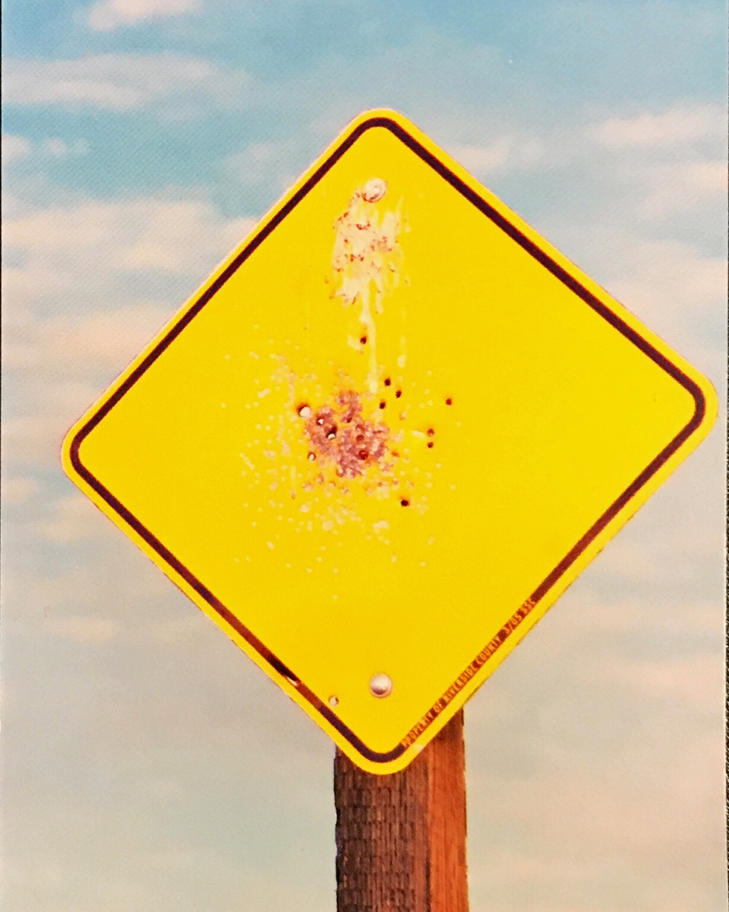
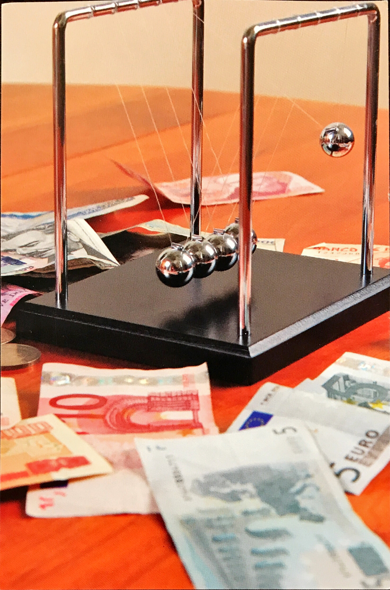

Last updated: July 22, 2019
Career Buddy: Rashida Hariana
In my time working in EMS I received very high marks on my charting capabilities, scoring a 93 on a scale of 1-100. In the last few years, I have received no (0) complaints from any clients or patients. I am also pleased to report that I have have personally revised two different emergency checklists, both of which earned praise for their readability and improvement over the old styles. Qualitatively, I am an independent worker, always capable of solo operation. The downside of that is I sometimes have difficulty adjusting to teamwork. I am also a very stable person who can be relied on, but this same stability can cause me to become somewhat rigid in how I approach problems. Finally, I don't like making mistakes. Although there are obvious benefits to that mentality, it can take me longer to accomplish tasks than it otherwise would.
I aim to make EMS charting software easier to use and more widely accessible. Current Electronic Patient Care Report (EPCR) suites suffer from lack of accessibility and/or poor usability, often requiring expensive, ruggedized hardware, always-on internet connections and other expensive barriers to entry. Web-based EPCR suites do not require specialized hardware, can scaled to meet an agency's needs, and empower rural EMS services to help gather critical research data that is currently in short supply, or low quality when it does exist.
I am going to help develop such web-based software, leveraging my experience in EMS to build software that is intuitive, modular, and compatible with a wide range of hardware due to its web-based design.
I am an aspiring web developer who will be working hard to bring webapps into a new age of accessibility and quality.


The first picture represents how I have made some messes in my past but that I now have a relatively blank
slate moving forward. The second picture represents success, shown here as monetary wealth, but more
generally meaning success in my career. What that means is that in a few years I want to be able to stand up
and say that I am happy with where I've gotten. I'll get to that point first by passing this class and
learning all I possibly can, then by finding an entry level position or internship at a mid to large-sized
company and perusing additional education so I can move up the ranks and be a valuable contributor. After a
few years, if I am not happy with the direction the company is going, I would start my own.
I have a very popular name and a minimal online presence, which means I found effectively nothing when I looked my name up on Google. When I appended "Albuquerque" to my name search, all I found was my Linkedin and a very old article from my former university about some volunteer work I did. Rather than seeing this as a negative, I choose to see it as a clean slate that will allow me to cultivate what people see about me online.
| Professional | Personal | |
|---|---|---|
| Identity | Daniel Juarez, danielpjuarez@outlook.com | None |
| Channels | Linkedin, Email, this website | Facebook (not indexed on Google), Personal email |
| Content | Web Developer, IT professional, former medical professional | My Facebook account, which is private and has nothing uploaded to it, not even a picture |
Version 1
Hello, My name is Daniel. I aspire to create and improve internet-based charting software to improve the quality and quantity of data gathered from EMS field crews. I plan to work with existing leaders in the field of internet-based charting solutions. Would you like to see my portfolio?
Version 2
To come
This week I've learned a lot of technical stuff, of course. I also learned that coding is even
more difficult than I anticipated and requires a level of concentration and attention to detail
that dwarfs any of my previous expectations. Every time a webpage worked as it was supposed to it felt like
both an accomplishment and a minor miracle. I feel like working through these problems made me more prepared
for upcoming challenges.
My perception about coding has changed in that I feel like it's no longer impossible to learn, but that it
is a difficult, long, and winding journey that will be possible with enough time and effort. I'm not sure I'm ready to
say that I love coding, but I hope I will get there.
This week I learned in a big way the importance of using resources. I have now bookmarked the PHP web manual,
MDN, and a few other websites that I can turn to to find out specific information in the future. I have learned the
importance of keeping track of what I frequently reference instead of having to perform a new search every
time, and have started taking more relevant notes. I'm not very good at remembering all the details I am supposed to,
so by taking this approach I will be able to move forward without necessarily memorizing everything
My perception of coding has not changed. I still don't love it, but I think I appreciate it more for its
complexity and how it all fits together in a finished product.
This week I learned from the Forbidden Island exercise that I try to take over and force my way through, for better or worse, when I think I am right about something. In these circumstances, I first try to convince my team that my way is best, then usually give up if they don’t agree. I guess I’m kind of spineless in that regard, but it is what it is. I also learned that I prefer to be a follower in any given group.
I’m also starting to learn the importance of working with people. No man is an island, and that holds true especially in these group projects we are doing. On my own I can barely make a website work, but working with other
people, stuff starts to make sense and fit together. I'm worried that I am not contributing as much as I should be
but I know that I have become more of a team player.
I suppose by week 3 I should have some sort of positive feelings about coding, but that is still largely not the
case. All I can say is that I am impressed by some of the webapps we've seen coming out of previous cohorts, and
I hope I will eventually be able to create that level of quality and function